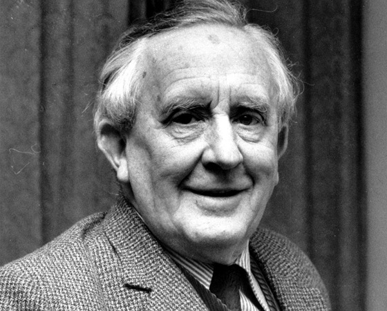

Slavný anglický spisovatel, filolog a univerzitní profesor. Vystudoval Oxfordskou univerzitu. Nejznámější jako autor Hobita a Pána prstenů.
Narodil se 3. 1. 1892 v Bloemfonteinu v Jižní Africe a zemřel 2. 9. 1973 v Bournemouth v Anglii na bronchopneumonii a vřed.
Jeho vášeň bylo studium jazyků. Hovořil více než tuctem evropských jazyků a některými baltskými a slovanskými jazyky. Sám vymyslel 15 umělých jazyků.